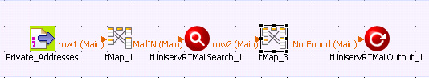
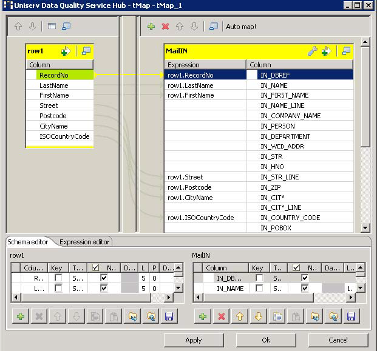
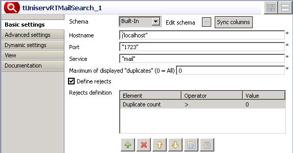

Avertissement
Ce composant est disponible dans la Palette du Studio uniquement si vous avez souscrit à l'édition correspondante de Data Quality Service Hub Studio.
|
Famille de composant |
Data Quality | |
|
Fonction |
Le composant tUniservRTMailSearch recherche des données similaires dans l'enregistrement d'entrée donné. | |
|
Objectif |
Le tUniservRTMailSearch cherche les valeurs dupliquées et ajoute de nouvelles données à chaque enregistrement. | |
|
Basic settings |
Schema et Edit schema |
Un schéma est une description de lignes, il définit le nombre de champs qui sont traités et passés au composant suivant. Le schéma est soit local (Built-in) soit distant dans le Repository. |
|
|
Host name | Nom de l'hôte du serveur, entre guillemets doubles. |
|
|
Port | Numéro du port d'écoute du serveur, entre guillemets doubles. |
|
|
Service |
Le nom du service est |
|
|
Maximum of displayed duplicates (0 = All) |
Saisissez le nombre maximum de doublons à afficher dans la vue Run. La valeur par défaut est 0, ce qui signifie que tous les doublons sont affichés. Mille doublons peuvent être affichés au maximum. |
|
|
Use rejects |
Cochez cette case pour paramétrer les options définissant les enregistrements de doublons ajouter au flux de rejet. Définissez : Element : Compte des doublons. Operator : <, <=, =, >=, >. Value : Saisissez la valeur manuellement.. |
|
Advanced settings |
Uniserv Parameters |
Pour plus d'informations, veuillez consulter le manuel utilisateur Uniserv mailRetrieval. |
|
|
tStatCatcher Statistics | Cochez cette case pour collecter les données de log au niveau du Job et de chaque composant. |
|
Utilisation |
Le tUniservRTMailSearch requiert un composant d'entrée et un ou plusieurs composant(s) de sortie. | |
|
Limitation |
Pour utiliser le composant tUniservRTMailSearch, le logiciel Uniserv mailRetrieval doit être installé. NoteAvant d'utiliser le tUniservRTMailSearch, un pool d'index doit être créé. Vous pouvez créer un pool d'index grâce au composant tUniservRTMailBulk. | |
Ce scénario décrit un Job qui ajoute des contacts à un pool d'index de mailRetrieval. Vous devez au préalable vous assurer que ces contacts existent déjà.
Le fichier d'entrée de ce scénario est sauvegardé dans le Repository, ce qui rend disponible le schéma des métadonnées.
Note
Les données de la source d'entrée doivent provenir du même pays.
Procédure 6.1. Déposer et relier les composants
Dans la vue Repository, développez le nœud Metadata et le répertoire dans lequel le fichier est sauvegardé. Glissez ce fichier dans l'espace de modélisation graphique.
La boîte de dialogue suivante apparaît :

Sélectionnez tFileInputDelimited et cliquez sur OK pour fermer la boîte de dialogue.
Le composant s'affiche dans l'espace de modélisation graphique.
Glissez les composants suivants de la Palette dans l'espace de modélisation graphique : deux composants tMap, un tUniservRTMailSearch et un tUniservRTMailOutput.
Connectez les composants à l'aide de liens Row > Main.
Acceptez le schéma du tUniservRTMailSearch en cliquant sur Yes dans la fenêtre de validation.

Procédure 6.2. Configurer les composants
Double-cliquez sur le composant tMap_1 pour ouvrir la fenêtre de mapping de son schéma. Sur la gauche se trouve la structure du fichier d'entrée et sur la droite le schéma du tUniservRTMailSearch. En bas se trouve le Schema Editor, où vous pouvez trouver et éditer les attributs de chaque colonne.
Mappez les colonnes du fichier d'entrée à leurs colonnes respectives dans le tUniservRTMailSearch. Pour ce faire, sélectionnez une colonne de la source d'entrée et glissez-la sur la colonne appropriée du côté droit.
Quand une liste d'entrée contient un ID de référence, il est conseillé de l'accepter. Pour ce faire, créez une nouvelle colonne appelée IN_DBREF depuis le Schema Editor et connectez-la à votre ID de référence.
Cliquez sur OK pour fermer la fenêtre.
Double-cliquez sur le composant tUniservRTMailSearch pour ouvrir sa vue Basic settings.
Dans la case Maximum of displayed "duplicates", saisissez 0 pour afficher tous les doublons.
Sélectionnez Define rejects pour ouvrir la fenêtre de définition des rejets.
Cliquez sur le bouton [+] pour insérer une ligne dans la fenêtre. Sélectionnez Duplicate count dans la colonne Elements, > dans la colonne Operator et 0 dans la colonne Value. De cette façon, tous les contacts existants sont écartés et seuls les nouveaux contacts sont ajoutés au pool d'index.
Cliquez sur l'onglet Advanced Settings et vérifiez les paramètres. Des paramètres par défaut ont été définis. Référez-vous au manuel de mailRetrieval pour plus de précisions.
Double-cliquez sur le second composant tMap pour ouvrir la fenêtre de mapping de son schéma. Sur la gauche se trouve le schéma du tUniservRTMailSearch et sur la droite celui du tUniservRTMailOutput.
Cliquez sur Auto map! pour mapper les champs automatiquement.
Le seul champ devant être mappé manuellement est l'ID de référence. Pour ce faire, glissez OUT-DBREF vers le champ IN_DBREF du côté droit.

Cliquez sur OK pour fermer la boîte de dialogue.
Double-cliquez sur le composant tUniservRTMailOutput pour afficher sa vue Basic settings.

Dans la liste Action on Data, sélectionnez Insert or update pour que tous les nouveaux contacts soient ajoutés au pool d'index.